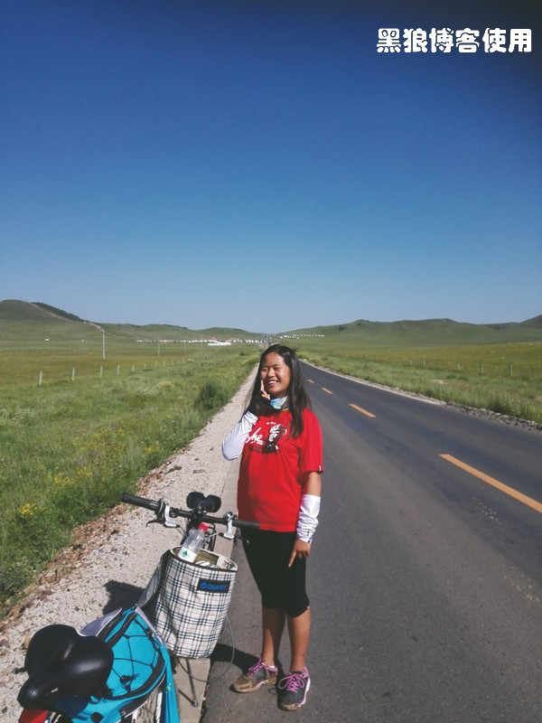

骑向乌兰布统（返京，总结篇）
黑狼语录：
—— 过分地关注一些细节，让我们失去了整体的方向。
题外话：
—— 胡有理对我的博文很不满意，她认为我没有描写出大草原的美丽、壮阔以及它的风吹草低现牛羊。其实，我跟方玉太多的精力都被那各式各样的小小的虫子吸引了，没有太多的闲暇去欣赏美景了。
8 月 4 日，不到八点钟，我就叫醒了方玉，今天要去大草原游玩，早去早回。
原本打算参加当地的旅行团，昨天问了宾馆老板有没有那种大草原的 N 日游可以参加，老板说没有，看来只能骑着自行车继续游览大草原了。
昨天晚上，宾馆老板给了一张大草原的地形图，我和方玉设计了今天骑行大草原的路线图。
吃过早饭，只带了几瓶水就出发了。
大草原的天然景色很美，满眼绿色，空气清新。骑行了十几分钟，就到了第一个景点，一个很大的蒙古包。没有停留，再用几分钟到了一个马场。
草原上的各种虫鸣声让方玉不想前进了，她感觉到处都是虫子，她想在这里骑过马后，就回宾馆休息。
在我的极力劝说下，她非常不情愿地跟着我又骑行了十几分钟，到了影视基地。
草原上的人工景点显得很孤单并且突兀，一览无遗，失去了继续探索的兴趣。公路很窄，车辆较多，今天设计的路线中，有一半的土路，沙土很厚不适合骑行，汽车经过，灰尘蔽日，让我和方玉望而却步。在她的又一次“恐吓、威胁”下，我们决定放弃今天的游览路线，返回马场去骑马。
返回马场的路上，方玉终于有了笑容。她刚才在影视基地，用脚去试探一小块湿泥地，结果一失足整个鞋子都踩进了湿泥中。
我的脸已经晒黑了，方玉很注意防晒，她除了腿部晒的很黑外，胳膊和脸都保护的较好。
我和方玉在烈日下骑马，她对大草原最大的期待就是骑马了。这条路就是昨夜设计的必经的一段土路。
骑马途中，休息。方玉不敢四处走动，不敢呆在草丛中。
大草原，远处的湖泊。如果骑行的话，这些景点都在今天的路线中，不远，但是，现在只能远观了。
远处骑马行进的队伍。
骑了将近两个小时的马，我和方玉才尽兴而归。下午我们讨论明天的计划时，她还要继续骑马，别的所有项目都不想参与了。
在晚上 20 点左右，我出去商店购买食物，回到宾馆前台续费的时候，被告知周五入住了一个旅游团，我们的房间没有预留。
乌兰布统的周末人比较多，我担心找不到住宿的地方，和方玉商量后，决定去木兰围场县，反正是呆在宾馆，在哪里都差不多，只是少骑了一次马。
8 月 5 日早 7:00，我和方玉坐上了开往围场县的汽车。
在离围场还有二十公里的地方，司机联系了一辆开往北京的长途汽车等在那里，太方便了，尤其我们还携带两辆自行车，在我的劝说下并承诺 150 元奖励后，方玉挣扎、犹豫了三分钟才勉强同意并坐上了开往北京的汽车。
她满脸的不高兴，她不想回到北京，她不想去做牙齿矫正，她不想拔掉四颗牙齿。
返京的路上，看到了吃鱼的农家饭馆，看到了白龙潭的那个豪华宾馆，看到了埋锅造饭的土路，每找到一个熟悉的地方，我和方玉都兴奋地大叫着。
一路顺利，在 16:10 到达了北京。
希望在不久的将来，我们还有下一次的“疯狂”行动。
总结篇
这次骑行的初衷，就是希望让方玉在各方面有所突破，目前还没有立竿见影的效果，但愿在将来的某段时间能产生影响。这次旅行，希望带给方玉在安逸生活中无法体会到的冲击，带给她从思维方式和到体能上的突破，让她认识外面的世界也从中认识自己。
出发前：
购买各种骑行准备，有了上次 2012 年骑行长春的经验后，总结出有些东西还是要使用专业的用具。
7 月 24 日，方玉大发脾气，差点取消了这次的骑行。
原定的出发日期是 7 月 25 日，因大雨预警推迟了一天。
题外话：
—— 当我鼓励方玉四处去炫耀她的骑行时，我自己又犯了 2012 年骑行长春后犯过的老毛病，在几次吹嘘后，我把 450 公里说成了 550 公里。
—— 每次做了一件自豪的事情后，我都有四处吹嘘的冲动。但是没过多久，我就在别人没什么大不了的眼神中，失去了吹嘘的冲动。